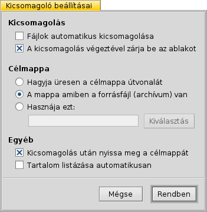

Magyar
Magyar Català
Català Deutsch
Deutsch English
English Español
Español Français
Français Italiano
Italiano Polski
Polski Português
Português Português (Brazil)
Português (Brazil) Română
Română Slovenčina
Slovenčina Suomi
Suomi Svenska
Svenska 中文 ［中文］
中文 ［中文］ Русский
Русский Українська
Українська 日本語
日本語 Kicsomagoló (Expander)
Kicsomagoló (Expander)
| Asztalsáv: | Programok. Illetve a fájl megnyitásakor indul. | |
| Útvonal: | /boot/system/apps/Expander | |
| Bellítások: | ~/config/settings/Expander_Settings |
A Kicsomagoló egy kis program, ami gyorsan kibontja a gyakori csomagolt fáljokat (zip, gzip, bzip2, rar, tar.gz).
Csak el kell indítani a csomagolt fált, és már meg is jelenik a program ablaka:

| ALT O | Megnyílik egy mappa-ablak ahol megkeresheti a csomagolt fájlt. | |
| ALT D | A megnyíló mappa-ablakban kiválasztva megadhatja a kicsomagolás helyét. | |
| ALT E | Elkezdődik a kicsomagolás. Ez megszakítható a ALT K kombinációval. |
A csomagolt fájl tartalma megtekinthető, ha bejelöljük a Tartalom megjelenítése opciót, vagy lenyomjuk az ALT L kombinációt.
A program csak teljes csomagokat tud kibontani.
Nem adható meg csak bizonyos elemek kibontása, és a csomagolt fájl tartalma sem módosítható.
Nem adható meg csak bizonyos elemek kibontása, és a csomagolt fájl tartalma sem módosítható.
A vagy az ALT S lenyomására megnyílik a beállítások ablak, ahol néhány hasznos beállítást módosíthatunk.
Az opciók elég egyértelműek:
